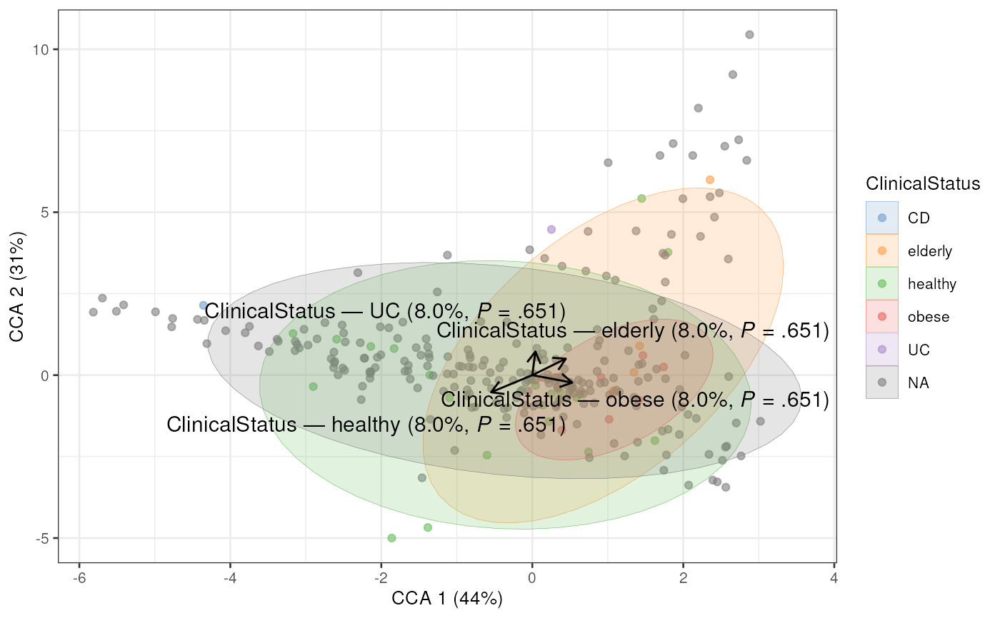
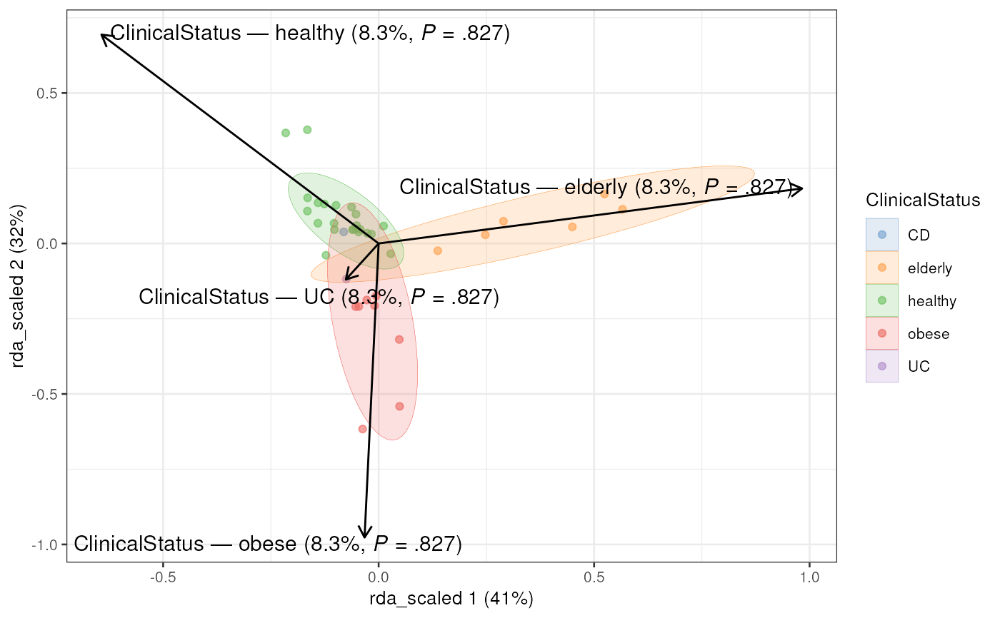
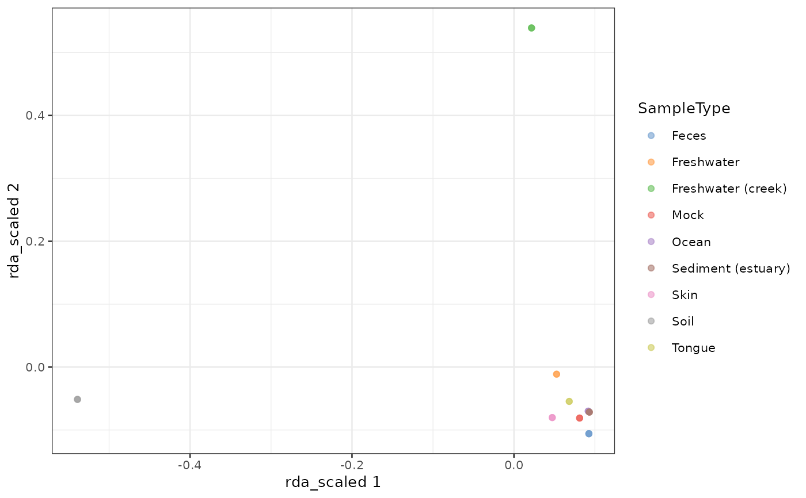

These functions perform Canonical Correspondence Analysis on data stored
in a SummarizedExperiment.
getCCA(x, ...)
addCCA(x, ...)
getRDA(x, ...)
addRDA(x, ...)
# S4 method for class 'ANY'
getCCA(x, ...)
# S4 method for class 'SummarizedExperiment'
getCCA(
x,
formula,
variables,
test.signif = TRUE,
assay.type = assay_name,
assay_name = exprs_values,
exprs_values = "counts",
scores = "wa",
...
)
calculateCCA(x, ...)
# S4 method for class 'SingleCellExperiment'
addCCA(x, formula, variables, altexp = NULL, name = "CCA", ...)
runCCA(x, ...)
# S4 method for class 'ANY'
getRDA(x, ...)
# S4 method for class 'SummarizedExperiment'
getRDA(
x,
formula,
variables,
test.signif = TRUE,
assay.type = assay_name,
assay_name = exprs_values,
exprs_values = "counts",
scores = "wa",
...
)
calculateRDA(x, ...)
# S4 method for class 'SingleCellExperiment'
addRDA(x, formula, variables, altexp = NULL, name = "RDA", ...)
runRDA(x, ...)a numeric matrix with samples as rows or a
SummarizedExperiment
object.
additional arguments passed to vegan::cca or vegan::dbrda and other internal functions.
method a dissimilarity measure to be applied in dbRDA and
possible following homogeneity test. (By default: method="euclidean")
scale: Logical scalar. Should the expression values be
standardized? scale is disabled when using *RDA functions.
Please scale before performing RDA. (Default: TRUE)
full Logical scalar. should all the results from the
significance calculations be returned. When full=FALSE, only
summary tables are returned. (Default: FALSE)
homogeneity.test: Character scalar. Specifies
the significance test used to analyse vegan::betadisper results.
Options include 'permanova' (vegan::permutest), 'anova'
(stats::anova) and 'tukeyhsd' (stats::TukeyHSD).
(By default: homogeneity.test="permanova")
permutations a numeric value specifying the number of permutations
for significance testing in vegan::anova.cca. (By default: permutations=999)
If x is a
SummarizedExperiment
a formula can be supplied. Based on the right-hand side of the given formula
colData is subset to variables.
variables and formula can be missing, which turns the CCA analysis
into a CA analysis and dbRDA into PCoA/MDS.
Character scalar. When x is a SummarizedExperiment,
variables can be used to specify variables from colData.
When x is a matrix, variables is a data.frame or
an object coercible to one containing the variables to use.
All variables are used. Please subset, if you want to consider only some of them.
variables and formula can be missing, which turns the CCA analysis
into a CA analysis and dbRDA into PCoA/MDS.
Logical scalar. Should the PERMANOVA and analysis of
multivariate homogeneity of group dispersions be performed.
(Default: TRUE)
Character scalar. Specifies the name of the
assay used in calculation. (Default: "counts")
Deprecated. Use assay.type instead.
Deprecated. Use assay.type instead.
Character scalar. Specifies scores to be returned. Must be
'wa' (site scores found as weighted averages (cca) or weighted sums (rda) of
v with weights Xbar, but the multiplying effect of eigenvalues removed) or
'u' ((weighted) orthonormal site scores). (Default: 'wa')
Character scalar or integer scalar. Specifies an alternative experiment
containing the input data.
Character scalar. A name for the column of the
colData where results will be stored. (Default: "CCA")
For getCCA a matrix with samples as rows and CCA dimensions as
columns. Attributes include calculated cca/rda object and
significance analysis results.
For addCCA a modified x with the results stored in
reducedDim as the given name.
For run* a
SingleCellExperiment
or a derived object.
*CCA functions utilize vegan:cca and *RDA functions vegan:dbRDA.
By default dbRDA is done with euclidean distances which equals to RDA.
Significance tests are done with vegan:anova.cca (PERMANOVA). Group
dispersion, i.e., homogeneity within groups is analyzed with
vegan:betadisper (multivariate homogeneity of groups dispersions (variances))
and statistical significance of homogeneity is tested with a test
specified by homogeneity.test parameter.
library(scater)
data(GlobalPatterns)
GlobalPatterns <- addCCA(GlobalPatterns, data ~ SampleType)
plotReducedDim(GlobalPatterns,"CCA", colour_by = "SampleType")

# Fetch significance results
attr(reducedDim(GlobalPatterns, "CCA"), "significance")
#> $permanova
#> Df ChiSquare F Pr(>F) Total variance Explained variance
#> Model 8 6.829675 3.130011 0.001 11.46642 0.5956241
#> SampleType 8 6.829675 3.130011 0.001 11.46642 0.5956241
#> Residual 17 4.636744 NA NA 11.46642 0.4043759
#>
#> $homogeneity
#> Df Sum Sq Mean Sq F N.Perm Pr(>F) Total variance
#> SampleType 8 517998722243 64749840280 6.262765 999 0.001 693759304679
#> Explained variance
#> SampleType 0.7466548
#>
GlobalPatterns <- addRDA(GlobalPatterns, data ~ SampleType)
plotReducedDim(GlobalPatterns,"CCA", colour_by = "SampleType")

# Specify dissimilarity measure
GlobalPatterns <- transformAssay(GlobalPatterns, method = "relabundance")
GlobalPatterns <- addRDA(
GlobalPatterns, data ~ SampleType, assay.type = "relabundance",
method = "bray")
# To scale values when using *RDA functions, use
# transformAssay(MARGIN = "features", ...)
tse <- GlobalPatterns
tse <- transformAssay(tse, MARGIN = "features", method = "standardize")
#> Warning: result contains NaN, perhaps due to impossible mathematical
#> operation
# Data might include taxa that do not vary. Remove those because after
# z-transform their value is NA
tse <- tse[ rowSums( is.na( assay(tse, "standardize") ) ) == 0, ]
# Calculate RDA
tse <- addRDA(
tse, formula = data ~ SampleType, assay.type = "standardize",
name = "rda_scaled", na.action = na.omit)
# Plot
plotReducedDim(tse,"rda_scaled", colour_by = "SampleType")

# A common choice along with PERMANOVA is ANOVA when statistical significance
# of homogeneity of groups is analysed. Moreover, full signficance test results
# can be returned.
tse <- addRDA(
tse, data ~ SampleType, homogeneity.test = "anova", full = TRUE)
# Example showing how to pass extra parameters, such as 'permutations', to anova.cca
tse <- addRDA(tse, data ~ SampleType, permutations = 500)